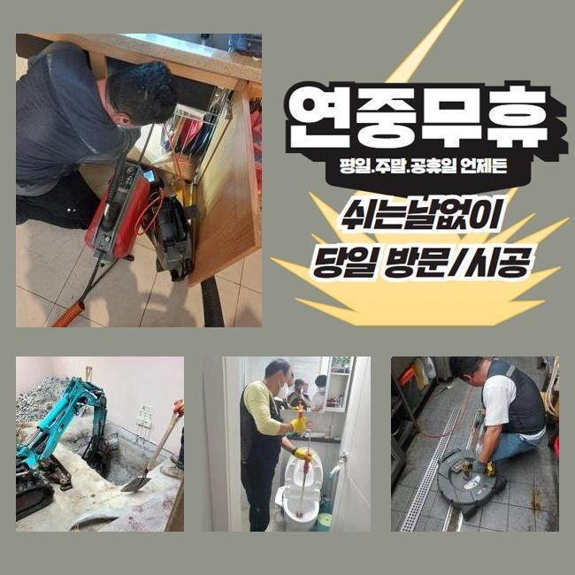
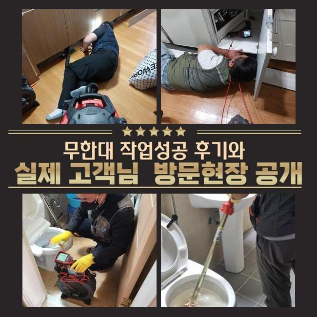
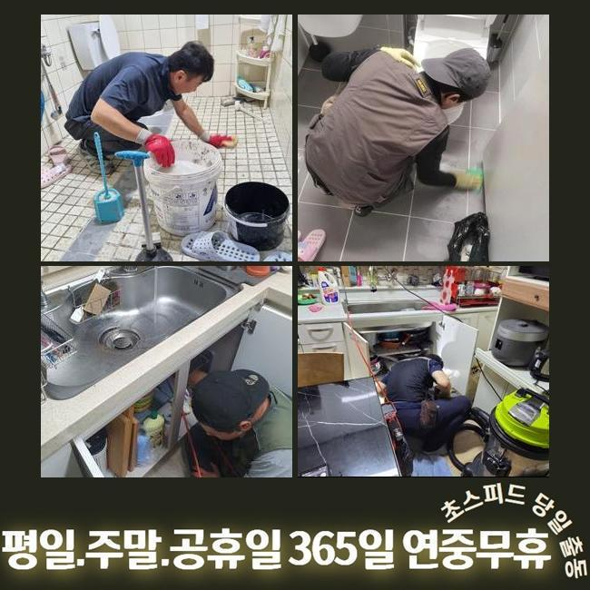
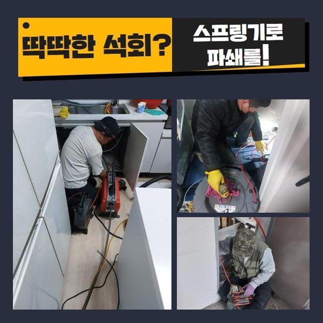
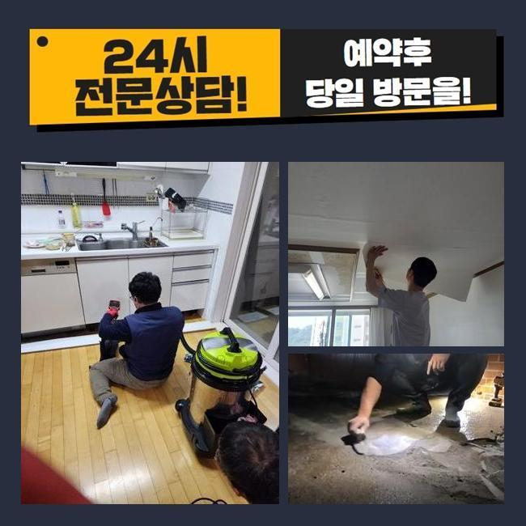

🏠 금천구 가산동씽크대뚫음 시흥동 하수구청소 배관막힘누수
시흥 싱크대막힘 전문 시공 후기

📋 작업 개요
- 위치: 시흥
- 서비스 유형: 싱크대막힘, 하수구막힘, 배관막힘, 누수수리, 뚫는업체, 배관청소, 고압세척
- 작업 일시: 2025. 3. 18. 14:03
- 업체명: 하수구수사대 (010-5615-2118)
🔍 문제 상황
금천구 가산동씽크대뚫음 시흥동 하수구청소 배관막힘누수
얼마전 막히는 문제때문에 불편들을 호소하셨던 고객님에게 연락이 왔었죠
의뢰인분의 경우 하수설비의 전문인은 아니셨지만 약간은 지식들은 가진 상태였는데요
의뢰자분은 입구쪽을 청소시키고 정확한 지점을 찾으려고 관찰했지만 어디부분이 문제가되는건지 알기가 힘들어 저희들에게 문의하셨던 것이였습니다
자택에 방문드리니 계속된 자가적인 조치들로 지친 기색이 느껴졌습니다
고객님 차원에서는 명확한 이유에 대해 짚어내기 힘든 사례가 대다수입니다
해당 장소에서 하수관을 점검하니 주의해야할 요소는 없는 상태였죠
고객분은 공동배수관 등에서 까닭이 발현되었을 확률들이 높을거라 판단했는데요
바깥쪽에 식물과 나무가 자리한 상태라면 땅 밑으로 말려 들어가거나 여러 폐기물들이 흘러들어갈 여지가있습니다
다양한 요소로 인하여 바깥의 하수구가 막히게될 수 있어요

🔎 원인 분석
💡 전문가 진단: 정밀 진단 장비를 사용하여 슬러지의 고착 여부를 판명하고 타격/세척 작업을 실시했습니다.
고객분에게 합리적으로 추정하고있는 원인들에 안내드리며 바깥쪽을 진단해줄것을 말씀드렸죠
의뢰자께서도 안내드린 내용들을 들어보시고 중앙관로의 진단에 동의했죠
작업들을 착수해주기위하여 기계검수도 진행시켰습니다
통수오류의 무엇이다! 라고 할 수가 없죠
배수설비가 드러나있으면 낙엽등 근처로부터 유입된 잔재들이 하수도로 쌓이게되죠
바깥쪽에 강수상황에 처했을때 바깥쪽 하수시스템들의 실황을 체크해주지않으면 점점 수렁으로 빠지게 될거에요
또한, 나무의 뿌리등이 배수관으로 침투되는 현장도 왕왕 있습니다
배관위에 자리하거나 더 나아가 균열을 생성하는 문제로도 발생케하죠
위와같은 문제에선 물빠짐이 정체되어 부차적 문제까지 벌어지게돼요
이말고도 내구성이 떨어져있다거나 손상에도 유수가 막혀버려 막힐 수 있어요

🔧 작업 과정
오래되어 표면이 튼튼하지 못하면 잔재들이 침전되는 기반이 만들어집니다
이어서 대다수 배수결함의 까닭들은 때에 맞춘 청소들을 신경안써서인데요
때때로 확인하지않을 시, 작은 이물이 자리를 잡으면서 막히는 상태가 심해질거에요
그래서 외측을 때때로 점검하고 관리해주는것이 앞서서 조치하는 실질적인 방법들이라 할 수 있겠습니다
작용할만한 까닭들을 인지하시고 미리 막는것이 중요하겠습니다
내시경장비로 바깥쪽 하수시스템들의 실태를 체크했습니다
내시경장비로 살폈더니 하수도의 구간별로 잔재와 기름으로 인하여 범벅이 된 형상이 확인됐죠
이렇게 하수관이 막힐땐 물의 배수가 이뤄질 수가 없어서 누수까지 발생되므로 적절한 해결책을 취하시는게 필요합니다
검수해보고 이물이 누적된 지점을 포인트로 설정하고 씻어내기로 결정해주었습니다
고수압의 방법을 준비해 고수압으로 집수설비까지 군데군데 세척했습니다
뭉쳐있던 슬러지를 안에서부터 청소해주니 정체되고있던 하수가 흘러나왔어요
초반엔 고여있던 오수들이 빠져나왔고 여러 폐기물들이 나오게되며 집수시설로 수월하게 복구됐어요
물이 조속히 빠지는 형상을 체크해보며 고객도 해당 과정들을 관찰하셨어요
작업들이 진행되고있는 중에 고객과도 소통하면서 여러 폐기물들이 쌓이게되는 연유들을 설명하니 의뢰자께서도 궁금하셨던 내용을 물으셨습니다
이것으로 고객분은 관리측면의 역할을 인지하게되었고 미래에도 정기성을 갖춘 청소들의 당위성에 대해 인지하셨어요
오차없이 작업들이 완료되고 하수관이 완전히 복구되며 고객분은 흘러가는 오수들을 보게되었습니다


✅ 작업 완료
고객께도 결과와 관련한 내용을 말씀드리고 지속적으로의 관리방법들까지 안내했답니다
때때로 외측을 점검해주고 상황마다 전문성을 갖춘 대책을 염두에 두는게 좋을것이라는걸 안내드렸어요
결국엔 고객분에게서 불편을 잠재울 수 있어 안심했습니다
고객분의 원활한 물빠짐에 보탬으로 다가설수있게 언제라도 저희쪽으로 전화주시기 바라요



⚠️ 베란다 누수 및 방수 관리 방법
- ✅ 비가 많이 올 때 창틀 주변이나 아래층 천장에 얼룩이 생기는지 정기적으로 확인해 보세요.
- ✅ 우수관 주변 실리콘 마감이 들뜨거나 깨진 틈새가 있는지 손상 여부를 수시로 체크하세요.
- ✅ 베란다 바닥 타일의 줄눈(메지)이 소실되면 그 틈으로 물이 침투하여 누수가 유발됩니다.
- ✅ 누수 의심 증상 발견 시 방치하면 아래층 손실이 커지므로 즉시 전문가의 진단을 받으십시오.
💡 핵심 정리
- 확실한 장비 작업(내시경 점검 및 샤프트 스케일링)으로 원인을 뿌리 뽑습니다.
- 작업 후 1년 이내에 동일한 부위 재발 시 100% 무상 A/S 서비스를 보장합니다.
- 서울 · 경기 · 인천 전 지역에 24시간 언제든 긴급 출동할 수 있도록 항시 대기 중입니다.
❓ 자주 묻는 질문 (FAQ)
🚨 시흥 싱크대막힘 문제로 고민이신가요?
정확한 원인 진단과 확실한 시공으로 재발 없는 해결을 약속드립니다.
24시간 긴급 출동 | 서울 · 경기 · 인천 전지역 | 1년 내 재발 시 무상 A/S